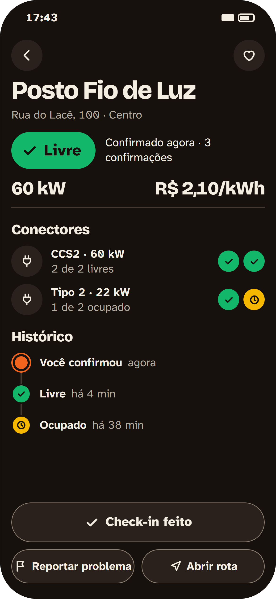
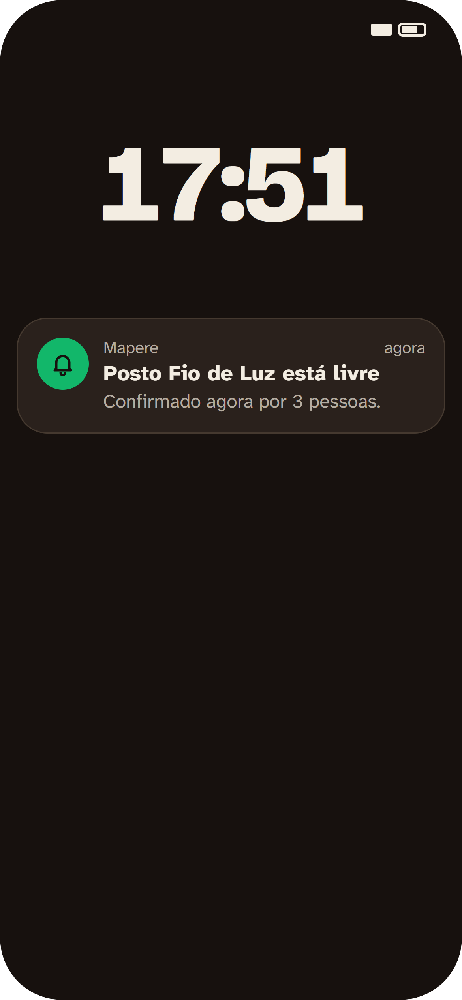
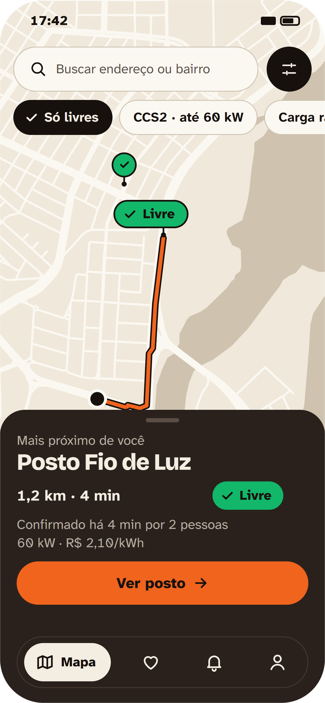
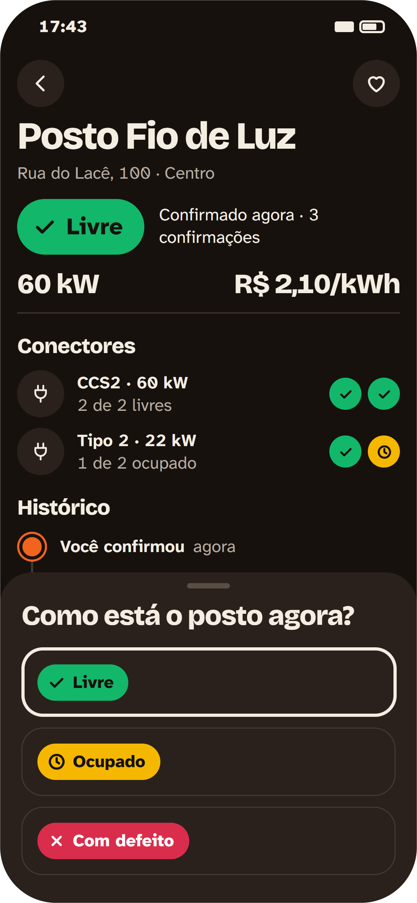

Bateria no fim.
Qual posto
está livre?
As primeiras telas do Mapere.
Telas ilustrativas. Mapa com dados do OpenStreetMap.
Consulte antes de sair.
O mapa vai mostrar o status de cada posto, há quanto tempo e por quantas pessoas.
Um toque em “Só livres” e só eles ficam na tela.
Tela ilustrativa. Nome, preço e distância são fictícios. Mapa com dados do OpenStreetMap.


Confirme quando chegar.
Toque em check-in e escolha: livre, ocupado ou com defeito.
São poucos toques, ali mesmo no posto.
Tela ilustrativa. Nome e endereço são fictícios.
O ponto acende.
Sua confirmação entra no histórico, com a hora.
Quem vem depois vê: livre, confirmado agora, por 3 pessoas.
Conectores, potência e preço ficam no mesmo lugar.
Tela ilustrativa. Nome, endereço, preço e potência são fictícios.
Seja avisado.
O status do seu posto mudou?
O alerta vai chegar no celular antes de você sair.
Tela ilustrativa. Nome do posto fictício.

O app ainda
não existe.
A gente está construindo, tela por tela.
Siga para
acompanhar
a construção.
@mapere.app
O app vai ser gratuito. Em breve no Android e no iPhone.